"
自分の興味の傾向を分析について
建築のデザインが好き
インテリアデザインが好き
電子製品のプロダクトが好き
ガラス工芸が気にする
全てシンプルなものが好き
一乗寺住んでいるからラーメンが好きになる
MESHについて
小さな、ブロック形状の電子タグです。 MESHタグは、それぞれ動きセンサー/ライト/ボタン/明るさセンサーなどのさまざまな機能を持ち、無線でMESHアプリとつながることができます。
何かに貼り付けたり、組み込んだりしやすいように小さく軽く作ってあり、組み合わせることで可能性は無限大に広がります。
MESHタグの種類について
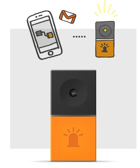
"
LEDタグ
いろいろな色に光ります。
例えば・・
メールが来たことを光で通知する。
天気予報の結果で赤や青に光らせる
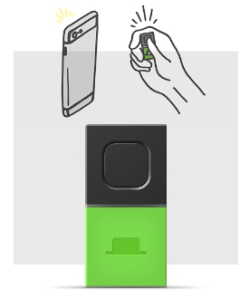
"
ボタンタグ
シンプルなボタンです。
例えば・・
ボタンを押すとスマートフォンのカメラで写真を撮る。
ボタンを押して効果音をならす。
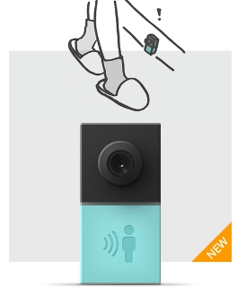
"
人感タグ
人の動きを検知できます。
例えば・・
廊下に置いておいて誰かが通ったら音をならす。
人が部屋に入ってきたら写真を撮る。
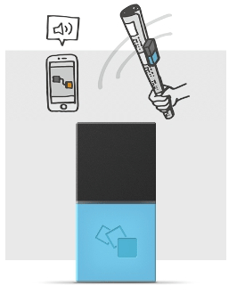
"
動きタグ
動きを検知することができます。
例えば・・
新聞チャンバラに好きな効果音をつける。
ぬいぐるみを揺らすと好きな言葉をしゃべる。
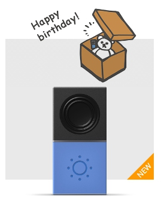
"
明るさの変化を検知できます。
例えば・・
プレゼントの箱を開けたらメッセージを再生。
秘密の引き出しを誰かが開けたらお知らせ。
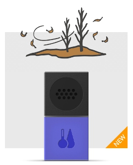
"
温度・湿度タグ
温湿度の変化を検知できます。
例えば・・
湿度が下がって乾燥したらメールで通知。
外出中でも部屋の温度を簡単チェック。
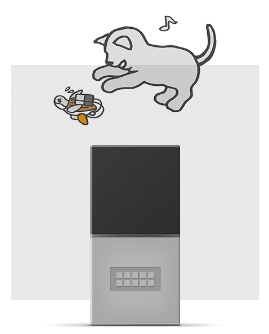
"
電子工作の無線化や、できることを拡張します。
例えば・・
ぬいぐるみにモーターを付けて走らせる。
電飾を自在にコントロール。
マインドマップの作成
私たちはMESHを利用して
デリバリーマンの配達問題を解決するチームです
名前：Automation DeliveryMan System
参加する人；Hirabayashi Ryuu Hori
今回、利用するMESHは人感タグ、ボタンタグ、LEDタグです
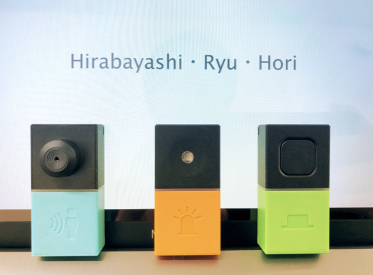
"
まず配達員からの受取データを作る
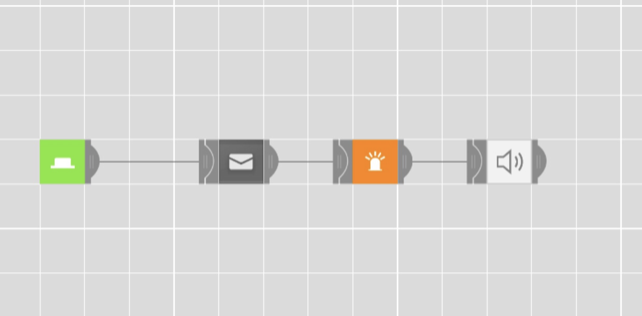
"
3つのMESHを組み合わせて、新しい設備を作る
新しい設備のイメージです
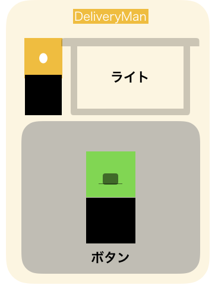
"
デリバリーマンに感謝を示すため
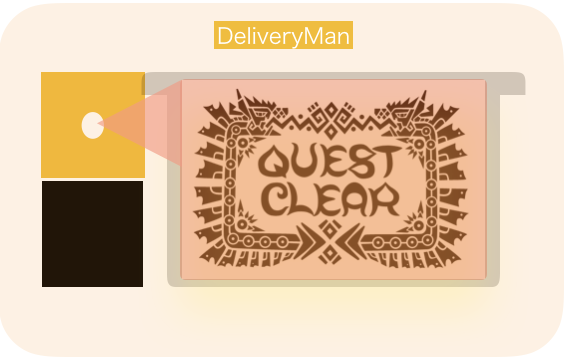
"
MESHで受信機能を実現した
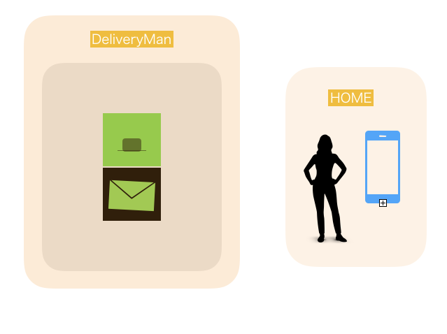
"
メールは自分のスマホに届く
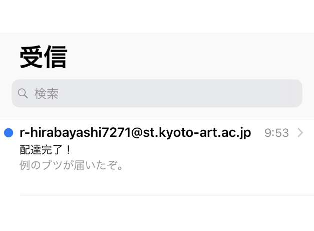
"
不在の場合及び再配達
まずデータを作る
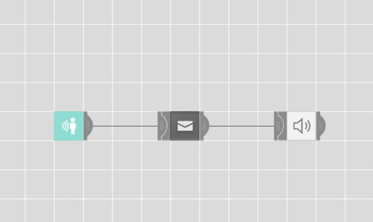
"
30秒間人が来なかったら
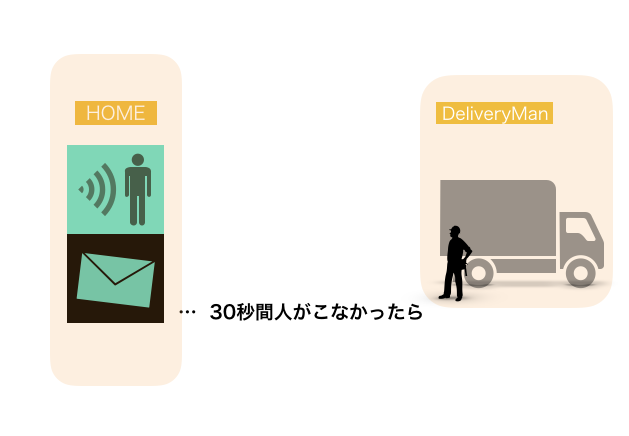
"
メールは自動的にデリバリーマンのスマホに届く
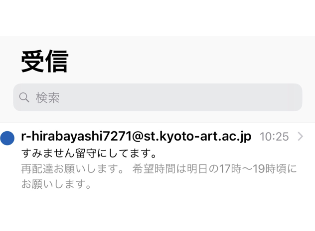
"